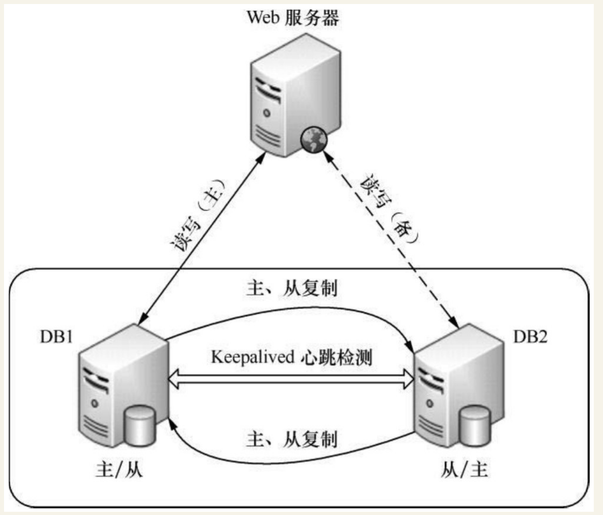

Contents
10.7. Keepalived实现MySQL双主高可用¶
架构图：

10.7.1. MySQL主主互备模式配置环境¶
| 主机名 | 操作系统版本 | MySQL版本 | 主机IP | MySQL VIP |
|---|---|---|---|---|
| DB1(主) | Centos6.3 | mysql5.1.73 | 192.168.88.11 | 192.168.88.10 |
| DB1(备) | Centos6.3 | mysql5.1.73 | 192.168.88.12 | 192.168.88.10 |
DB1和DB2数据库同步的方式省略
10.7.2. DB1¶
DB1服务器上/etc/keepalived/keepalived.conf
global_defs {
notification_email {
acassen@firewall.loc
failover@firewall.loc
sysadmin@firewall.loc
}
notification_email_from Alexandre.Cassen@firewall.loc
smtp_server 192.168.200.1
smtp_connect_timeout 30
router_id MySQLHA_DEVEL
}
vrrp_script check_mysqld {
script "/etc/keepalived/mysqlcheck/check_slave.pl 127.0.0.1" #检测mysql复制状态的脚本
interval 2
weight 21
}
vrrp_instance HA_1 {
state BACKUP #在DB1和DB2上均配置为BACKUP
interface eth0
virtual_router_id 80
priority 100
advert_int 2
nopreempt #不抢占模式，只在优先级高的机器上设置即可，优先级低的机器上不设置
authentication {
auth_type PASS
auth_pass qweasdzxc
}
track_script {
check_mysqld
}
virtual_ipaddress {
192.168.88.10/24 dev eth0 #mysql的对外服务IP，即VIP
}
}
/etc/keepalived/mysqlcheck/check_slave.pl文件的内容如下
#!/usr/bin/perl -w
use DBI;
use DBD::mysql;
# CONFIG VARIABLES
$SBM = 120;
$db = "ixdba";
$host = $ARGV[0];
$port = 3306;
$user = "root";
$pw = "xxxxxx";
# SQL query
$query = "show slave status";
$dbh = DBI->connect("DBI:mysql:$db:$host:$port", $user, $pw, { RaiseError => 0,
PrintError => 0 });
if (!defined($dbh)) {
exit 1;
}
$sqlQuery = $dbh->prepare($query);
$sqlQuery->execute;
$Slave_IO_Running = "";
$Slave_SQL_Running = "";
$Seconds_Behind_Master = "";
while (my $ref = $sqlQuery->fetchrow_hashref()) {
$Slave_IO_Running = $ref->{'Slave_IO_Running'};
$Slave_SQL_Running = $ref->{'Slave_SQL_Running'};
$Seconds_Behind_Master = $ref->{'Seconds_Behind_Master'};
}
$sqlQuery->finish;
$dbh->disconnect();
if ( $Slave_IO_Running eq "No" || $Slave_SQL_Running eq "No" ) {
exit 1;
} else {
if ( $Seconds_Behind_Master > $SBM ) {
exit 1;
} else {
exit 0;
}
}
这是个用Perl写的检测mysql复制状态的脚本。ixdba是本例中的一个数据库名。读者只需修改文件中数据库名、数据库的端口、用户名和密码即可直接使用，但在使用前要保证对于此脚本有可执行权限
10.7.3. DB2¶
接着将keepalived.conf文件和check_slave.pl文件复制到DB2服务器上对应的位置，
然后将DB2上keepalived.conf文件中priority值修改为90，同时去掉nopreempt选项。
在完成所有配置后，分别在DB1和DB2上启动Keepalived服务，在正常情况下VIP地址应该运行在DB1服务器上。